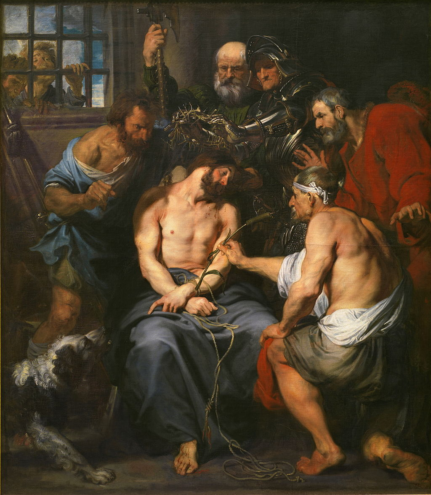

<head>
<meta charset="UTF-8" />
<meta name="keywords" content="drawing, painting" />
<meta name="description" content="drawings by Sunjy" />
<title>Sunjy</title>
<link rel="shortcut icon" type="image/x-icon" href="../../mImages/mCommon/favicon.ico" media="screen" />
<link rel="stylesheet" type="text/css" href="../../mCsses/mCommon/mCssA.css" />
<link rel="stylesheet" type="text/css" href="../../mCsses/mCommon/mCssB.css" />
<link rel="stylesheet" type="text/css" href="../../mCsses/mCommon/mCssC.css" />
<link rel="stylesheet" type="text/css" href="../../mCsses/mCommon/mCssD.css" />
<link rel="stylesheet" type="text/css" href="../../mCsses/mContent/mCssA.css" />
<link rel="stylesheet" type="text/css" href="../../mCsses/mContent/mCssB.css" />
<link rel="stylesheet" type="text/css" href="../../mCsses/mContent/mCssC.css" />
<link rel="stylesheet" type="text/css" href="../../mCsses/mContent/mCssD.css" />
</head>
<script type="text/javascript" src="../../mScripts/mContent/mContentAA.js" /></script>
<script type="text/javascript" src="../../mScripts/mContent/mContentAB.js" /></script>
<script type="text/javascript" src="../../mScripts/mContent/mContentAC.js" /></script>
<script type="text/javascript" src="../../mScripts/mContent/mContentAD.js" /></script>
<script type="text/javascript"></script> 
<script type="text/javascript">
document.write('<div class="mImgAbsolute"></div>');
/*
document.write('<p class="mFontSizeBColor" />From a white paper...</p>');
document.write('<table class="center"><tr><td>');
document.write('');
document.write('</td></tr></table>');
*/
</script>


<script type="text/javascript">
document.write('<p class="mFontSizeBColor" />Christ Crowned with Thorns</p>');
document.write('<p class="mFontSizeSColor" />“Christ Crowned with Thorns” by Anthony van Dyck depicts Christ surrounded by figures who are mocking him. An armed soldier is placing the Crown of Thorns on his head.<br><br>The executioner is pulling his hair, and another offers him a cane as his scepter. Two other figures watch the scene through a window.<br><br>Van Dyck started this painting aged 20 during his first Antwerp period when he was the leading studio assistant and pupil of Peter Paul Rubens.<br><br>It shows Rubens’ influence in its chiaroscuro and realistic portrayal of musculature. However, van Dyck seems to have made significant changes early during his stay in Italy, showing the influence of Titian and other Venetian painters in Jesus’ face.<br><br>For the Art historians, infrared reflectography and x-rays have made it possible to determine the changes in the scene as Van Dyck experimented and modified the composition in successive stages.<br><br>The work was painted in various stages, and the dog and men at the window are later additions to the initial layout.<br><br>Even with the naked eye and magnification, a visible trace of earlier painting beneath a layer of paint on a canvas can be seen as in the example of a painted-over foot with toes that can be seen between Christ’s foot and the dog.<br></p>');
document.write('<table class="center" /><tr><td>');
document.write('<br>The executioner is pulling his hair, and another offers him a cane as his scepter. Two other figures watch the scene through a window.<br><br>Van Dyck started this painting aged 20 during his first Antwerp period when he was the leading studio assistant and pupil of Peter Paul Rubens.<br><br>It shows Rubens’ influence in its chiaroscuro and realistic portrayal of musculature. However, van Dyck seems to have made significant changes early during his stay in Italy, showing the influence of Titian and other Venetian painters in Jesus’ face.<br><br>For the Art historians, infrared reflectography and x-rays have made it possible to determine the changes in the scene as Van Dyck experimented and modified the composition in successive stages.<br><br>The work was painted in various stages, and the dog and men at the window are later additions to the initial layout.<br><br>Even with the naked eye and magnification, a visible trace of earlier painting beneath a layer of paint on a canvas can be seen as in the example of a painted-over foot with toes that can be seen between Christ’s foot and the dog.<br>" />');
document.write('</td></tr></table>');
</script>


